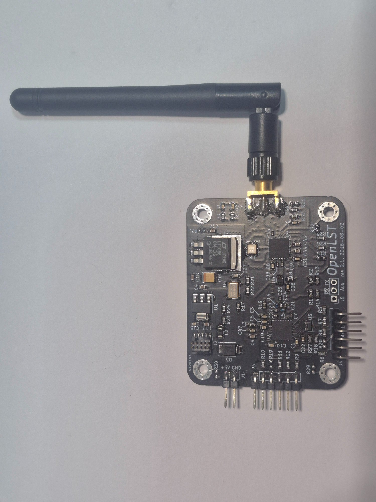
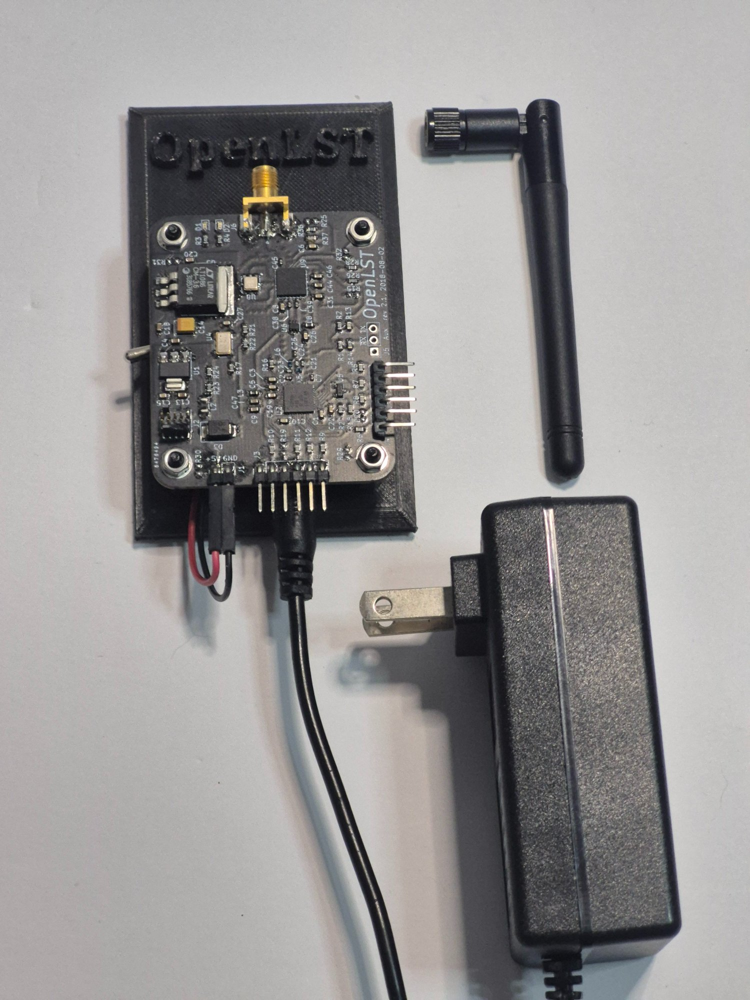
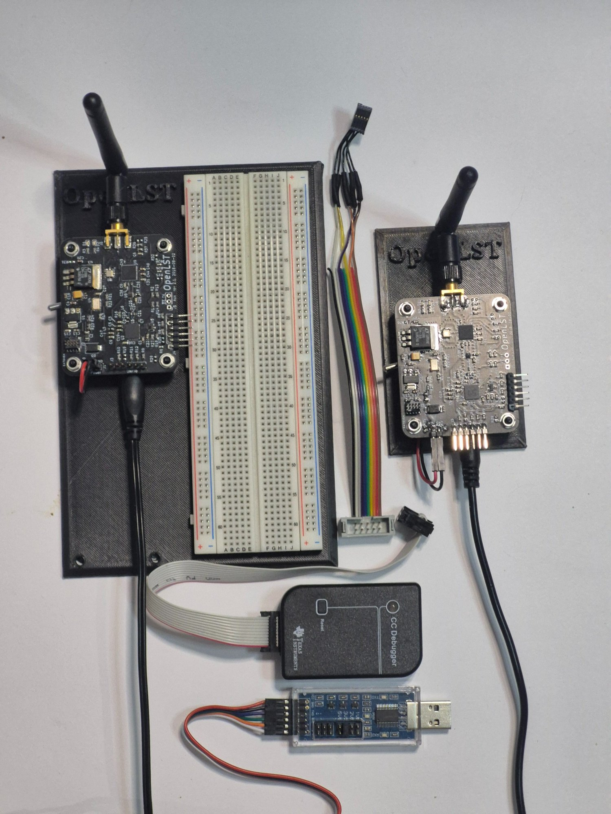

From single-board evaluation to a complete two-radio development system — every kit ships bootloader-flashed, lab-keyed, and ready to operate.
The SpaceCommsKit board matches the OpenLST reference gerbers from Planet Labs exactly — with two modern component substitutions for parts that are no longer in production.

OpenLST Explorer Kit board with 915MHz SMA antenna
Two components in the original design became unavailable. Both replacements are pin-for-pin equivalents — same footprint, same electrical specification, no schematic changes required.
| Original Part | Replacement | Function |
|---|---|---|
| Qorvo RFFM6403SB | RFFM6406 | RF Front-End Module |
| pSemi PE4259 | PE4250MLI-2 | RF Switch |
All components sourced exclusively from Digi-Key, Mouser, or manufacturer direct. No clone parts, no gray market chips.
| Parameter | Value |
|---|---|
| RF Frequency | 915 MHz (US ISM band — no license required) |
| Modulation | 2-FSK with Forward Error Correction |
| Data Rate | 7.4 kbaud |
| TX Power | +27 dBm |
| Receiver Sensitivity | −112 dBm |
| Microcontroller | Texas Instruments CC1110 · 26MHz |
| Flash Memory | 32 KB |
| Interface | 3.3V TTL UART × 2 · 115200 baud |
| Supply Voltage | 5V DC · Never exceed 5V |
| Board Size | 50 × 60 × 5 mm |
| Assembly | Hand-assembled · Tennessee, USA |
Every Ground Station Kit and Explorer Dev Kit includes custom 3D printed board stands designed specifically for the OpenLST board. The OpenLST logo is embossed on the front face. Stands include mounting points for the board and cable management.

Ground Station Kit — board in custom stand with power adapter

Explorer Dev Kit — both radios, stands, and accessories
These boards operate at 5V DC maximum — never connect more than 5 volts under any circumstances. During RF transmission the power amplifier draws a significant current spike. If the reboot LED illuminates during transmit, your power supply cannot deliver sufficient current. Always use the included 5V 3A adapter or a supply rated for at least 2A at 5V.
All kits are hand-assembled to order. Lead times vary with component availability — contact us for current lead time before ordering.
One fully provisioned OpenLST radio board with antenna. Ready to integrate into your own hardware setup.
Complete ground station setup — board in custom stand with power management. Plug in, connect, operate.
The complete two-radio system. Everything you need for RF link testing, payload experiments, OTA firmware development, and remote imaging.
The OpenLST Explorer Kit is designed and characterized for terrestrial RF communications. For LEO satellite applications, a directional antenna (7–10 dBi yagi) and reduced data rate (1.2–9.6 kbaud) are recommended to achieve adequate link margin across a full orbital pass. This approach mirrors how Planet Labs operated the original OpenLST design on their Dove constellation — the same RF architecture, tuned for the geometry of the pass. At 915MHz a +27dBm ground station with a 7dBi yagi provides comfortable link margin to a 400–550km LEO satellite at elevation angles above approximately 15°.
⚠️ Ships to United States only. Lead times vary with parts availability. Orders are assembled by hand — please allow 1–3 weeks.
Questions before ordering? info@spacecommskit.com · Volume or university pricing available on request.
Higher throughput. Same open-source philosophy. Same ground station software. Sign up to be notified when it launches.